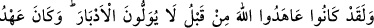

ALLÂH’A VERİLEN SÖZ,
MESÛLİYETİ GEREKTİRİR!
15. Andolsun ki daha önce onlar, sırt çevirip kaçmayacaklarına dâir Allâh’a söz
vermişlerdi. Allâh’a verilen söz mesuliyeti gerektirir!
16. (Resûlüm!) De ki: Eğer ölümden veya öldürülmekten kaçıyorsanız, kaçmanın
size asla faydası olmaz! (Eceliniz gelmemiş ise) o takdirde de, yaşatılacağınız süre
çok değildir.
17. De ki: Allah size bir kötülük dilerse, O’na karşı sizi kim korur; ya da size
rahmet dilerse (size kim zarar verebilir)? Onlar, kendilerine Allah’tan başka ne bir
dost bulurlar ne de bir yardımcı.
18. Allah, içinizden (savaştan) alıkoyanları ve yandaşlarına: «Bize katılın»
diyenleri gerçekten biliyor. Zaten bunların pek azı savaşa gelir.
19. (Gelseler de) size karşı pek hasistirler. Hele korku gelip çattı mı, üzerine
ölüm baygınlığı çökmüş gibi gözleri dönerek sana baktıklarını görürsün. Korku
gidince ise, mala düşkünlük göstererek sizi sivri dilleri ile incitirler. Onlar îman
etmiş değillerdir; bunun için Allah onların yaptıklarını boşa çıkarmıştır. Bu, Allâh’a